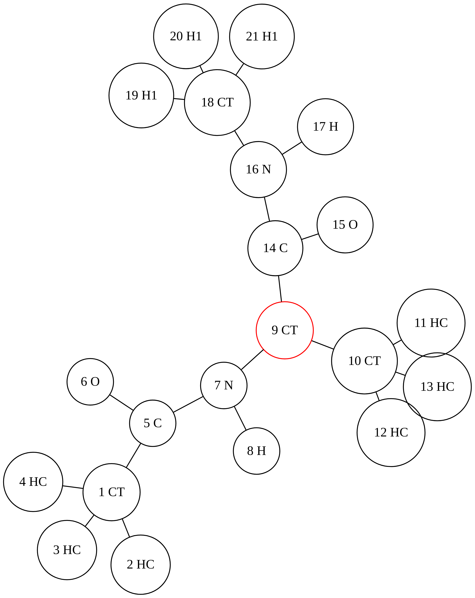

Ala
::: {.cell execution_count=”1”}
from kimmdy.parsing import read_top
from kimmdy.topology.topology import Topology
from pathlib import Path
from kimmdy.misc_helper import top_to_graph
:::
::: {.cell execution_count=”2”}
ala_top = read_top(Path('../example/example_ala/Ala_out.top'))
ffdir = Path("../tests/test_files/assets/amber99sb-star-ildnp.ff")
top = Topology(ala_top, ffdir)
ls = top_to_graph(top)
with open("ala-top.dot", "w") as f:
f.writelines(ls)
:::
::: {.cell file=”ala-top.dot”} ::: cell-output-display ::: {#fig-ala}
{width=”7in” height=”5in”}
Figure 1: A diagram of the ala topology ::: ::: :::